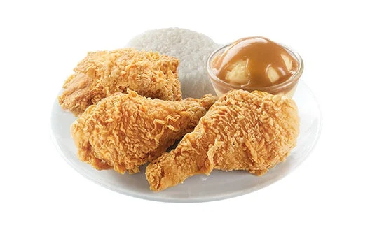
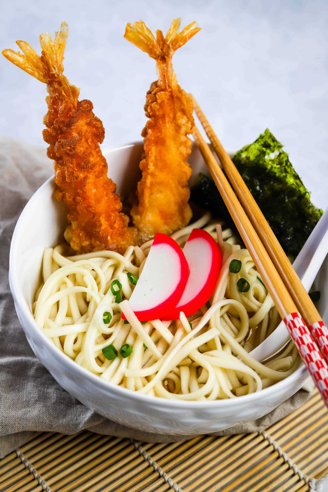
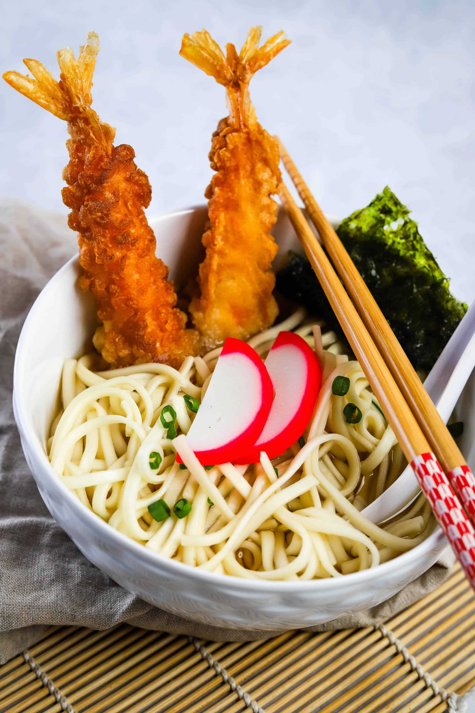

The Godmother of Soul Food Restaurant
Location: 1101 W Gate City Blvd Suite 115-117, Greensboro, NC 27403 | Specialties: Classic Soul Food | Hours: 11 AM - 9 PM


Are you a culinary adventurer in search of the perfect meal near campus? Look no further! We’ve curated a list of the most exceptional dishes from some of the best spots near the UNCG Petty Building. Whether you're craving comfort food, some tea to sip on, or a hearty meal, we have recommendations for you!
Location: 1101 W Gate City Blvd Suite 115-117, Greensboro, NC 27403 | Specialties: Classic Soul Food | Hours: 11 AM - 9 PM
Location: 423 Tate St, Greensboro, NC 27403 | Specialties: Sushi & Ramen | Hours: 11 AM - 9 PM

 

Location: 948 Walker Ave, Greensboro, NC 27403| Specialties: Bubble Tea | Hours: 12 PM - 9 PM